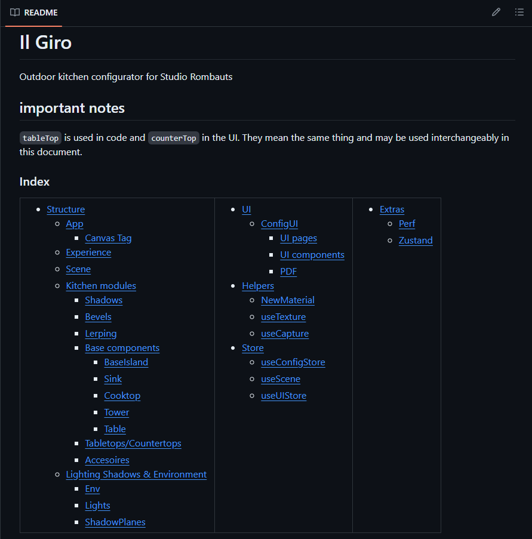
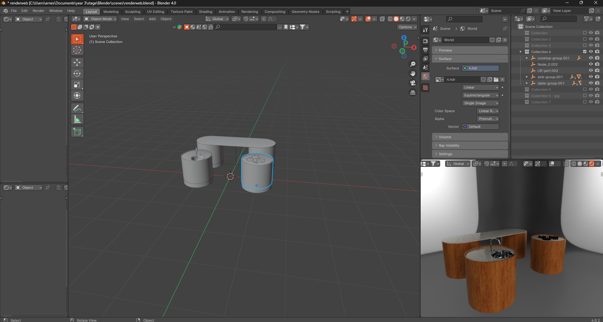

da ging snel seg...
Fantastisch nieuws!! Ik heb de voorbije 2 weken niets moeten aanpassen aan de UI. 😎
Omdat stage eindigt maar het project nog niet 100% af is, zal Robbe, mijn stagebuddy, het project overnemen en afwerken. We zijn 90-95% along the way maar die afwerking is wel echt belangrijk. Niet te vergeten dat de website nog in een wordpress omgeving moet worden gezet. Ik had 4 uurtjes even tijd waarvna ik niet wist hoe ik het moest invullen, dus ben ik spontaan een volledige documentatie beginnen schrijven voor de configurator. Robbe heeft mij vanaf het begin begelijd en hij kent wel de grote lijnen van het project, maar het is toch handig dat hij een documentatie heeft waarin hij alles kan terugvinden. Robbe en Stijn (CEO) waren allesinds heel tevreden dat ik dit gedaan heb.
De colorpicker die ik gemaakt heb met de RAL kleuren blijft in het project maar hij was gebouwd op de code via react-color. Om beter te integreren voor ons project heb ik de colorpicker volledig vanaf nul geschreven. Dit gaf me meer controle over de styling en de functionaliteit. Ik heb er ook voor gezorgd dat de kleuren (swatches) elk een tooltip hebben met de RAL code. De input voor RAL kleuren werkt ook volledig.
Hierdoor moest ik ook wel even de datastructuur aanpassen voor de PDF, zodat de RAL kleuren goed worden meegegeven.
Dit spinner gifje heb ik gemaakt voor de configurator. Het is een gifje van een spinner die draait. Hij wordt getoont als de materialen in de configurator aan het laden zijn. Dit kan soms wel een secondje duren omdat de materialen van de server moeten worden gehaald.

Omdat ik (blijkbaar) een high-potential leerling ben, heb ik een uitnodiging gekregen voor Yellowcon. Hierdoor was ik er dinsdag niet. Ik vond Yellowcon echt super interessant wel, en ik heb er heel veel bijgeleerd. Ik zou het zeker aanraden aan iedereen die het zich kan veroorloven.
Samen met de feestdag zorgde dit voor een hééél korte week. Ik heb maandag eigenlijk gewoon wat code opgekuist en vrijdag heb ik veranderingen van Robbe gemerged op mijn branch. Hij had een bug gefixt met de materialen.
Ten slotte heb ik een functie toegevoegd aan de configurator zodat de configuratie, samen met de modellen, en de materialen kan gedownload worden als een .glb bestand. Potentiële klanten zijn binnehuis architecten en zij moeten aan deze modellen aankunnen, niet enkel aan de offerte met informatie.
Hierboven zie je een voorbeeld van een download, die erna in Blender is geopend.